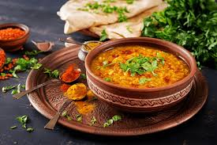

Home
Dal recipes

Description
The flavors of Indian food are very diverse -- in North India families use
a lot of dairy, wheat, and cumin seeds, whereas in South India (which is
more coastal) food is often flavored with coconut milk, curry leaves, and
mustard seeds. This one-pot dal is absolutely bursting with South Indian
flavors like curry leaves, mustard seeds, and coconut milk. My family
enjoys eating it with some steamed basmati rice.
Ingredients
- 1.17 tablespoon olive oil
- 1.17 onion, diced
- 1.17 tablespoon grated ginger
- 1.17 jalapeño, de-seeded and finely chopped
-
2.33 tablespoons cilantro leaves, finely chopped (save some for garnish)
- 7 curry leaves
- 1.17 teaspoon mustard seeds
- 2.33 teaspoons cumin powder
- 1.17 teaspoon coriander powder
- 1.17 teaspoon cinnamon powder
- 1.17 teaspoon turmeric powder
- 2.33 cloves garlic, finely chopped
- 1.17 tomato, finely chopped
- 1.17 cup red lentils
- 3.5 cups vegetable stock
- 1.17 cup coconut milk
- Salt and pepper, to taste
- Juice of 1.17 lemon
steps
- Place a large pot over medium heat.
- Add olive oil, onions, ginger, and jalapeños.
-
Add a couple of pinches of salt then cook, stirring occasionally until
the onions are fully cooked.
- Add curry leaves and mustard seeds.
-
When mustard seeds start to pop, add the rest of the spices and garlic,
then cook until fragrant.
- Add tomatoes and cook for an additional 3 minutes.
-
Add lentils, stock, and coconut milk, and when bubbling starts reduce
heat to low.
-
Let dal bubble away until lentils collapse and dal becomes creamy (about
20 minutes).
-
Taste and adjust seasonings as necessary, then add a squeeze of lemon.
- Garnish with cilantro leaves and serve with rice and naan.